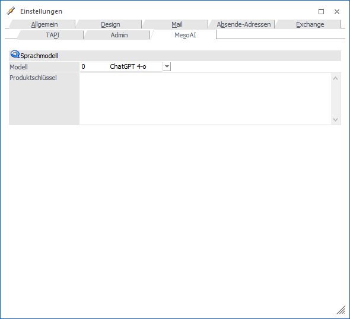
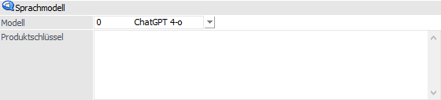
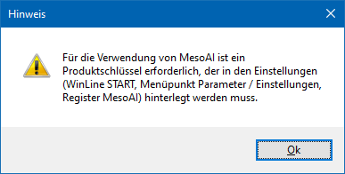
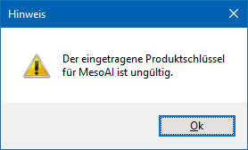

Im Register "MesoAI" kann der Produktschlüssel für die Verwendung der Funktion MesoAI hinterlegt werden. Dieser Produktschlüssel ist notwendig, um die entsprechenden Funktionen in folgenden Bereichen durchführen zu können:
ü Anlage von Personenkonten aus einem Text / einer Grafik / eines PDF
ü Anlage von Artikel aus einem Text / einer Grafik / eines PDF
ü Anlage einer WinLine LIST-Liste aus einem Text
ü Bearbeitungsvorschläge / Übersetzungen in der CRM-Fallansicht
ü Ausfüllen von Daten bei der Anlage von CRM-Fällen
ü Ausfüllen von Daten bei der Anlage von FORM-Datensätzen
ü Bearbeitungsvorschläge / Übersetzungen bei allen Textfeldern in der MWL
Achtung
Dieses Register steht nur WinLine Benutzern des Typs "Administrator" (sogenannten Volladministratoren) zur Verfügung.

Sprachmodell

Ø Modell
Aus der Auswahlliste kann das Sprachmodell der KI ausgewählt werden. Aktuell steht nur die Variant ChatGPT 3.5 zur Auswahl.
Ø Produktschlüssel
Hier wird der Produktschlüssel eingegeben, der z.B. von ChatGPT angefordert werden kann.
Hinweis
Wurde hier kein Produktschlüssel oder ein falscher Produktschlüssel hinterlegt, und wird trotzdem eine der angeführten MesoAI-Funktionen angewählt, wo wird in weiterer Folge eine entsprechende Meldung ausgegeben:

